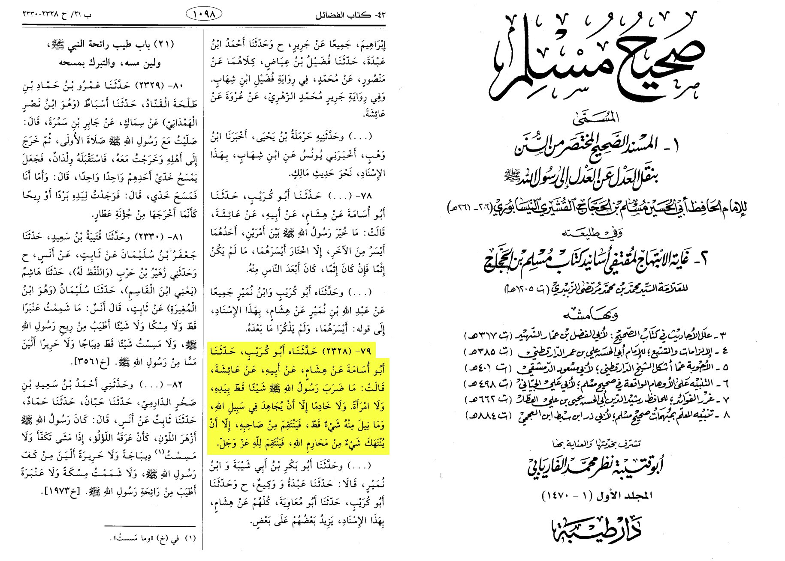
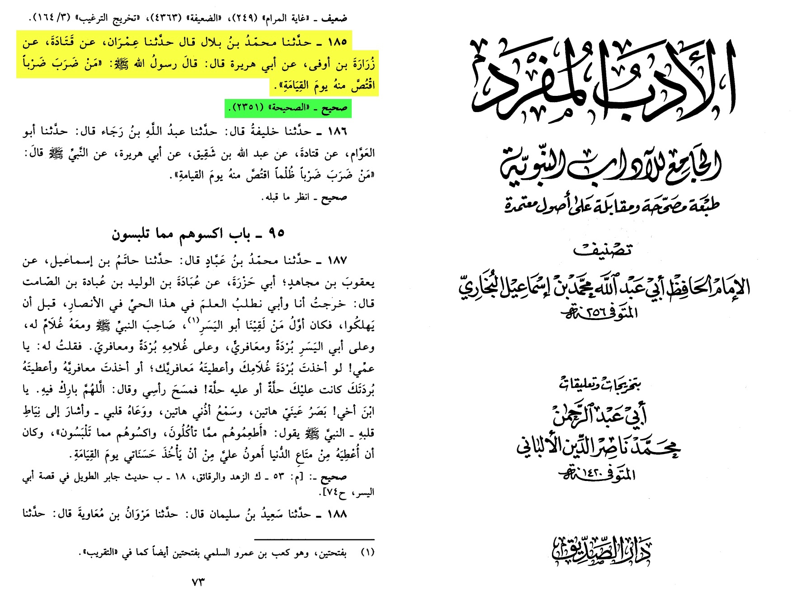
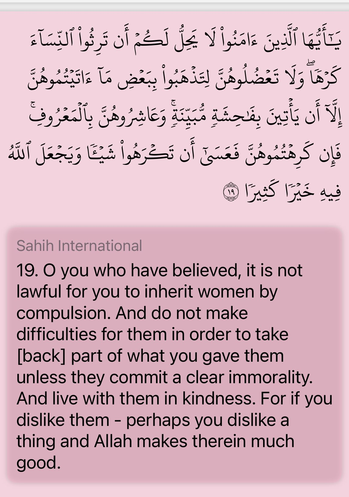
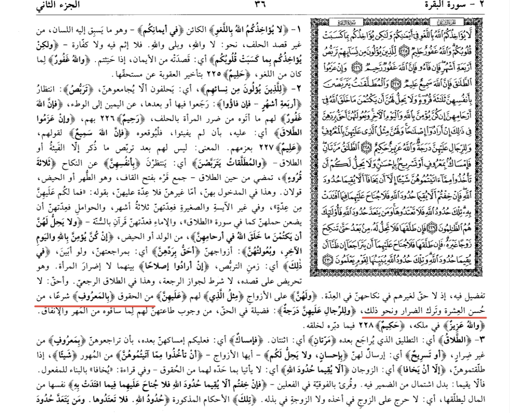
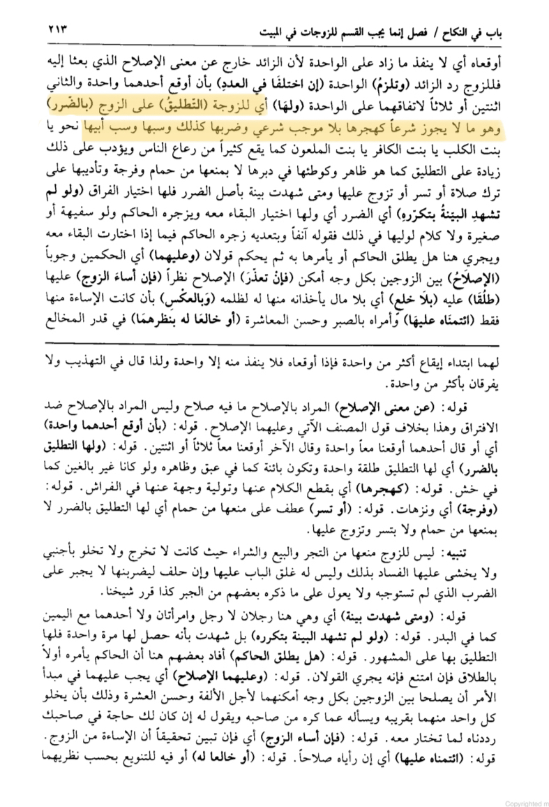
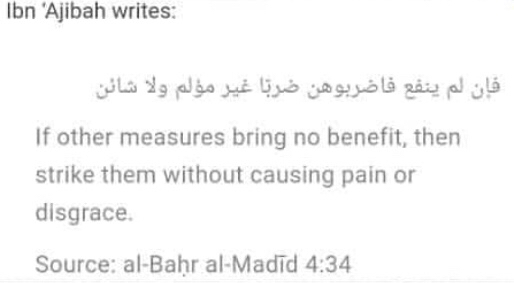
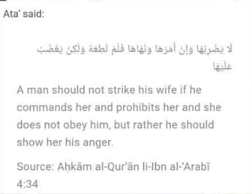

Aa'isha (ra) reported that Allah's Messenger (ﷺ) never beat anyone with his hand, neither a woman nor a servant, but only,
in the case when he had been fighting in the cause of Allah and he never took revenge for anything unless the things made inviolable by Allah were made violable;
he then took revenge for Allah, the Exalted and Glorious.
Source: Sahih Muslim 2328

"Whoever strikes someone will receive retribution for it on the Day of Resurrection."
Source: al-Adab al-Mufrad 185, Grade: Sahih**


Among their rights to good conduct is what is legislated of good living conditions, avoiding harm, and so on
Source: Tafsīr al-Jalalayn 2:228

The wife may have a separation from her husband due to harm caused that is not legally permissible, such as abandoning her without a legal necessity,
or striking her likewise, or cursing her or her parents.
Source: حاشية الدسوقي على الشرح الكبير (المجلد الرابع/ص 313)


https://m.youtube.com/watch?v=HGCSy1UQusY
al Jassas al Hanafi says:
"al Hasan said [Then strike them] meaning, "Strike them without causing pain."
Source: "Ahkam al Qur'an" 3/150
Shams al-Din al-Ramli says:
"It is not permissible to strike harshly or severely... or on the face."
Source: "Nihayat al Muhtaj" 6/390
al Khiraqi says:
"It is permissible for him to strike her but it must not be severe (or painful)."
Ibn Qudamah says in his commentary on al Khiraqi's words:
""It must not be harsh" meaning, it must not be severe."
Source: "al Mughni 'ala Mukhtasar al Khiraqi" 7/318